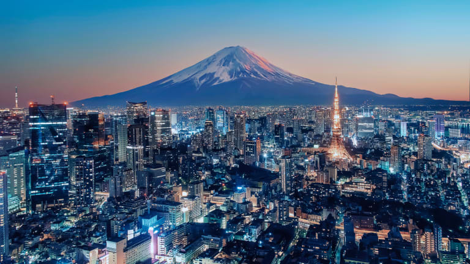

Japan is the eleventh most populous country in the world, as well as one of the most densely populated and urbanized. About three-fourths of the country's terrain is mountainous, concentrating its population of almost 125 million on narrow coastal plains. Japan is divided into 47 administrative prefectures and eight traditional regions. The Greater Tokyo Area is the most populous metropolitan area in the world, with more than 37.2 million residents.
While Japan may seem so isolated, causing strangers to have second thoughts about going there,Japan still has a lot to offer in terms of history, food, technology, and sports. Whether its the tales of Ninjas and Samurais, epic Sumo Wrestling mathces, Sushi and Raw fish, or technology advancement, Japan is one of the most exciting and electrifying nations in the world!
